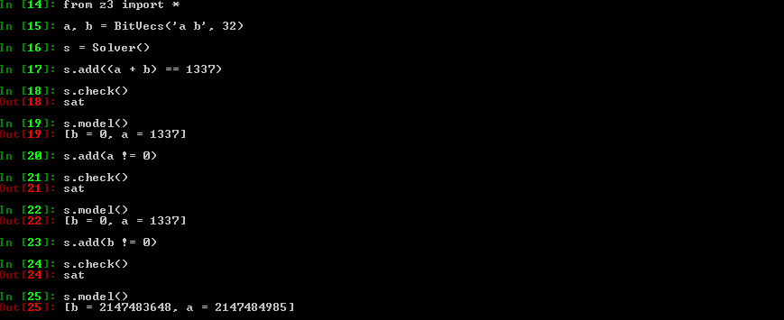
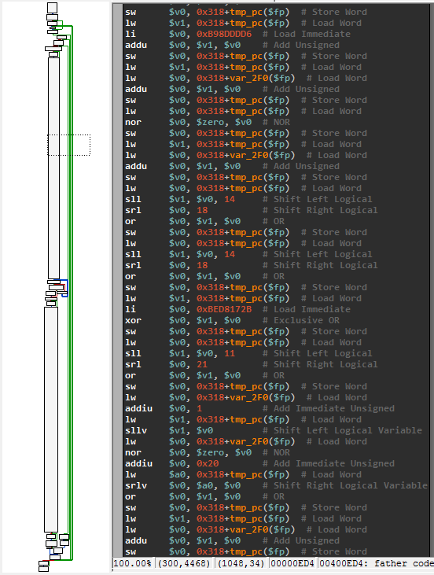

Theorem prover, symbolic execution and practical reverse-engineering
Security Day 2015 - Lille 1 University - France
16th of January 2015
Axel '@0vercl0k' Souchet
Table of Contents
Introduction
Who is this guy?
Young security researcher @ MSRC by day
CS graduate since June 2013, security enthusiast since forever
Love all kind of security and low level subjects: code obfuscation, system programming, software vulnerability exploitation, reverse-engineering, etc.
Where I like to blog: doar-e.github.io/
Where I post codes: github.com/0vercl0k
Where I tweet: twitter.com/0vercl0k

What are we going to talk about?
What we won't talk about?
Won't bother you with theoretical stuff ;-)
Won't talk about how theorem provers do their magic
Theorem provers
What it is in a few words
“A collection of little engines of proof”
Leonardo De Moura, 2009I like to see it as a "software black-box oracle"
-
You give it an equation, it gives you back an answer
If satisfiable: you get a model
Easy right?
Why on earth do you need that?
-
Verify specific properties of a program, a function, a basic-block
- Does that piece of code respect the spec?
-
Reachability problem
- Can we reach this basic block assuming I can control this variable?
- Achieve maximum code coverage
- Breaking really weak "hash"-like functions
- Type checking
- Test case generation
Z3 101
Presentation
Open-source theorem prover created and developed by Leonardo de Moura and Nikolaj Bjørner, researchers @ Microsoft Research in Redmond
Used in different program analysis, verification, test-case generation projects @ MS (cf Z3 an efficient SAT solver)
Coded in C++, available for Windows, Linux, OSX and FreeBSD
Bindings available for: Java, C#, Python, etc.
The sources live here: z3.codeplex.com/sourcecontrol/latest, read them!
Installation on Windows for Python
Nice and neat Windows installers are here
Run that in a Python shell to make sure the installation went fine
import z3
Z3py Hello-World
from z3 import *
a, b = BitVecs('a b', 32)
s = Solver()
s.add((a + b) == 1337)
if s.check() == sat:
print s.model()
else:
print 'Unsat'

Z3py Hello-World: Explanations I
BitVecs are basically arrays of 0 & 1's
It is the type the closest from what your CPU handles
A BitVec8 is basically the equivalent of an unsigned char variable in C
A solver instance holds a set of constraints you want to apply
Obviously, you can apply constraints only on Z3 variables: not on normal Python variables
Z3py Hello-World: Explanations II
-
BitVecs are not the only type available, you can also use: Ints, Bools, Arrays, etc.
Note that Z3 integers are integers like in math: they are infinite ; as opposed to BitVecs
-
Why :-)?
BitVecs do wrap, like CPU registers or C integers

Z3py Hello-World: Explanations III
Important detail: Z3 data-types don't hold any signess information
Operators do
You have operators for signed & unsigned operations:
Signed operators: <, <=, >, >=, /, %and, >>
Unsigned operators: ULT, ULE, UGT, UGE, UDiv, URemand, LShR

Z3py tips: solve & Solver
Maybe the most important function: this is the function that will answer your questions
If solvable, it gives you a model (even if several exist) which is basically concrete values for your symbolic variables

Z3py tips: Solver & backtracking points
You can create backtracking points by using push and pop
It basically saves the constraints you have set in the solver: it's a checkpoint
As the name suggests, it's particularly useful when using backtracking algorithms
Z3py tips: simplify
This function is something really important: as the name suggests it can simplify Z3 expressions
Keep in mind it's not magic though: the returned expression does not have to be the most simplified expression (cf Breaking Kryptonite's Obfuscation)
A lot of options can be enabled / disabled to help simplify to do a better job at simplifying ; call help_simplify()

Z3py tips: ZeroExt, SignExt
Two useful functions when you deal with BitVecs
As their names suggest, they basically zero or sign extend a BitVec
Use case: zero extend a 32 bits BitVec into a 64 bits BitVec
Z3py tips: Extract, Concat
Another couple of useful functions:
Extract: Extract some bits from a BitVec
Concat: Concatenate BitVecs
Z3 operators need operands of the same size ; Extract/Concat/ZeroSignExt can help you to meet this requirement
Z3py tips: RotateRight/Left
Equivalent of x86's ROL/ROR instructions

Z3py tips: prove
Another quite cool & important function is prove
The function basically checks the given equation is always true
If not proven, Z3 will give you a counterexample
Example: Let's prove that Concat works properly

Z3py tips: prove example II
-
More real example:
Can we use ((a + b) < a) to know if there is an overflow when adding unsigned 32 bits integers a and b?
Instead of storing the result in a 64 bits integer & checking that the result is not >= 0x100000000?
def does_overflow_custom_check(a, b):
return If(
ULT((a + b), a), # ULT = < unsigned
True,
False
)
def does_overflow_check(a, b):
a_64 = ZeroExt(32, a)
b_64 = ZeroExt(32, b)
return If(
UGE((a_64 + b_64), BitVecVal(0x100000000, 64)), # UGE = >= unsigned
True,
False
)
x, y = BitVecs('a b', 32)
prove(
does_overflow_check(x, y) ==
does_overflow_custom_check(x, y)
)
Z3py tips: prove example II

Z3py tips: Arrays
Quite handy to simulate the memory in a symbolic way
Z3 will use a brute-force approach, it will essentially try all possible combinations. It will not manage to find the "smart" proof that we (as humans) immediately see.
You can access the array content with [] or Select, and write to it via Store

Z3py tips: substitute
This function allows you to substitute variables by whatever you want in an expression
You can replace a symbolic variable by a concrete value
Or the way around
Z3Py tips: And/Or/Distinct
Equivalent to Python's and & or
They are really nice to use: you can give them an array of expressions, or inlined expressions
-
A lot of time you need to express the following: "I want all my symbolic variables to be different"
You can do it manually via And(x1 != x2, x2 != x3, x1 != x3)
Or you can use Distinct(x1, x2, x3) which is way cleaner

Z3Py tips: If
It is sometimes useful, but it's not like Python's if & else
Different how? Not really easy to explain
-
Here is a C code / Z3 example:
unsigned int a, b; if((a + b) < 100) { a += 100; b -= 10; } else { a = 1337; b += 1000; }

Z3Py tips: Visiting Z3 expressions
-
You may need to inspect & visit the AST of a Z3 expression
Useful for transformation, conversion, etc.
The expression is a tree
e.arg(x) gets you the x th argument in the expression
e.num_args() gives you the number of argument
Check z3topy.py
Z3Py toys: graph coloring
Graph coloring problem ; graph_coloring_z3.py

Z3Py toys: NQueens
n-queens problem ; nqueens_z3.py
Z3Py toys: Mojette
Mojette game ; mojette_z3.py
Z3Py toys: Magic square
Magic square game ; magic_square_z3.py
References
-
Shameless plug: z3-playground: Trying to compile a list of puzzle/"real" problems solved with Z3
Every examples are available in z3-playground/essentials ; feel free to contribute!
If you have cool ideas / codes, feel free to reach out to me or send pull requests
"The Z3 Constraint Solver" by Leonardo De Moura & Nikolaj Bjorner
Conclusion
Z3 is really powerful, use it!
There are loads of advanced features that I don't use / I don't know how to use:
Tactics / Strategies / Subgoals?
Functions?
Patterns?
Data-types?
Quantifiers?
-
If you don't like Z3's API and / or its features try out another one:
Symbolic execution 101
Symbolic execution: definition with words
-
Symbolic execution involves computation of a mathematical expression that represents the logic within a program. It can be thought of as an algebra designed to express computation.
Richard @richinseattle Johnson, NSC 2014 -
An analogy I like to give between concrete / symbolic execution and mathematical functions:
- Concrete execution would be to know that f(3) = 19
- Symbolic execution would be to know that f(x) = x**2 + 10
- Symbolic execution expresses every concrete executions possible
Symbolic execution: definition with words II
- So does that mean I have to recode a virtual CPU with the semantic of every instructions?
- Nope ; see it as a recipe. Take shortcuts to make your life easier:
- I don't need to handle branches
- I only need to handle 4 different instructions
- Think about the granularity you want: a basic block, a function, a library, an entire program
- Why not symbolically execute intermediate representation code instead of assembly?
Symbolic execution: definition with code
- Let's imagine this code
void hello(unsigned char c) { unsigned char win; unsigned int a = c; a = a*2 + 0xdeadbeef; if(a >= 0 && a < 0xbaad) win = 1; else win = 0; }
- Concrete:
- c = 0xf0
- a = 0x000000f0
- a = 0xdeadc0cf
- win = 0
- Symbolic:
- c is an input sym var
- a_0 = ZeroExt(24, c)
- a = a_0*2 + 0xdeadbeef
- win = If(And(UGE(a, 0), ULT(a, 0xbaad)), 1, 0)
References
- Check Jonathan Salwan's talk
- "Symbolic Execution" by Stephen Chong, Harvard University
- "SAGE in one page"
- "SAGEly advice" from Richard '@richinseattle' Johnson
- "Program Synthesis in Reverse Engineering" by Rolf '@RolfRolles' Rolles
- "KLEE LLVM Execution Engine"
- "S2E: Selective Symbolic Execution"
- "Rudder: The BitBlaze Mixed Execution Component"
- "Mise à plat de graphes de flot de contrôle et exécution symbolique" by Eloi '@elvanderb' Vanderbeken
Practical reverse-engineering
Breaking weak hash function: hash collisions
Original blog-post by James '@tiraniddo' Forshaw: Generating hash collisions
- The problem in details ; bear with me:
- Goals
- s = "abc\0" + SUFFIX
- H(s) == H("xyz")
- strcmp(s, "abc") == 0
- Definitions
- SUFFIX is a string fully controlled: even non-ASCII characters are allowed
- H is a hashing function
Let's even find an ASCII printable SUFFIX!
Breaking weak hash function: hash collisions
- Modeling C concrete strings
- Sequence of BitVecVal8
def str_to_BitVecVals8(s):
return map(
lambda x: BitVecVal(ord(x), 8),
list(s)
)
- Sequence of BitVec8
def ascii_printable(x):
return And(0x20 <= x, x <= 0x7f)
def generate_ascii_printable_string(base_name, size, solver):
bytes = [BitVec('%s%d' % (base_name, i), 8) for i in range(size)]
solver.add(And(map(ascii_printable, bytes)))
return bytes
Breaking weak hash function: hash collisions
- Modeling H
def H(input_bytes):
h = 0
for byte in input_bytes:
h = h * 31 + ZeroExt(24, byte)
return h
Breaking weak hash function: hash collisions
- Putting it all together:
def collide(target_str, base_str):
size_suffix = 7
s = Solver()
res = str_to_BitVecVals8(base_str) + [BitVecVal(0, 8)] + generate_ascii_printable_string('res', size_suffix, s)
s.add(H(res) == H(str_to_BitVecVals8(target_str)))
if s.check() == sat:
x = s.model()
return base_str + '\x00' + ''.join(chr(x[i].as_long()) for i in res[-size_suffix:])
raise Exception('Unsat!')
def main(argc, argv):
a = 'xyz'
b = 'abc'
c = collide(a, b)
print 'c = %r' % c
print 'H(%r) == H(%r)' % (a, c)
print 'strcmp(%r, %r) = 0' % (c, b)
Breaking weak hash function: hash collisions
- Job done!
- No brute-force, elegant solution: didn't even thought at how we could have "reversed" H, Z3 did it for us
- Full code is here: hash_collisions_z3.py

Breaking conservative semantic obfuscation: Kryptonite
Kryptonite is an LLVM optimization pass that adds semantic-preserving obfuscation for arithmetic operations
PoC I've written up in "Obfuscation of steel: meet my Kryptonite" back in 2013
Doing the transformation at the LLVM IR level allows you to support every LLVM back-end architecture: ARM, x86, x64 & a lot of others
It also means you can write your code in every languages supported by LLVM
And obviously, you can output binaries in whatever executable formats LLVM supports: Elf, Mach-o, PE
Check out O-LLVM if you are interested in this field
The semantic of the program is preserved: the assembly is just a bit disturbing
Breaking conservative semantic obfuscation: Kryptonite
unsigned int add(unsigned int a, unsigned int b)
{
return a + b;
}
int main(int argc, char* argv[])
{
if(argc != 3)
return 0;
printf("Result: %u\n", add(atoll(argv[1]), atoll(argv[2])));
return 1;
}
$ wget https://raw.github.com/0vercl0k/stuffz/master/llvm-funz/kryptonite/llvm-functionpass-kryptonite-obfuscater.cpp
$ clang++ llvm-functionpass-kryptonite-obfuscater.cpp `llvm-config --cxxflags --ldflags --libs core` -shared -o llvm-functionpass-kryptonite-obfuscater.so
$ clang -S -emit-llvm add.c -o add.ll
$ opt -S -load ~/dev/llvm-functionpass-kryptonite-obfuscater.so -kryptonite -heavy-add-obfu add.ll -o add.opti.ll && mv add.opti.ll add.ll
$ opt -S -load ~/dev/llvm-functionpass-kryptonite-obfuscater.so -kryptonite -heavy-add-obfu add.ll -o add.opti.ll && mv add.opti.ll add.ll
$ llc -O0 -filetype=obj -march=x86 add.ll -o add.o
$ clang -static add.o -o kryptonite-add
$ strip --strip-all ./kryptonite-add
Breaking conservative semantic obfuscation: Kryptonite
PS C:\Users\0vercl0k> dir D:\Codes\llvm-funz\kryptonite-add
Length Name
------ ----
689112 kryptonite-add

Breaking conservative semantic obfuscation: Kryptonite
The context
We want to attack a single basic block
If you look closer at the previous slide, only a subset of x86's instructions are used
Their semantics are easy to implement
We don't need to handle branches, nor EFLAGS
We don't know the number of input symbolic variables
Heuristic: Every time we read from an uninitialized location, we treat it as an input variable
The plan
Symbolically execute the basic block
To do so you need a virtual environment: both CPU & memory
For us, virtual CPU = bunch of registers that can either hold symbolic variables or concrete values
Breaking conservative semantic obfuscation: Kryptonite
A disassembler class
We need to parse the code to execute: IDAPython, string manipulation
A virtual CPU: the core of the program
Use the disassembler component & implement the instruction semantics
Also simulates memory
Keep track of the (simplified) equations
Launching the engine..
Trying to read a non-initialized area, we got a new symbolic variable: arg0
Trying to read a non-initialized area, we got a new symbolic variable: arg1
Done, retrieving the equation in EAX, and simplifying..
Breaking conservative semantic obfuscation: Kryptonite
EAX=(~(Concat(2147483647, Extract(0, 0, arg1)) |
Concat(2147483647, ~Extract(0, 0, arg0)) |
4294967294) |
~(Concat(2147483647, ~Extract(0, 0, arg1)) |
Concat(2147483647, Extract(0, 0, arg0)) |
4294967294)) +
Concat(~(Concat(1073741823, Extract(1, 1, arg1)) |
Concat(1073741823, ~Extract(1, 1, arg0)) |
Concat(1073741823,
~(~Extract(0, 0, arg1) |
~Extract(0, 0, arg0)))) |
~(Concat(1073741823, ~Extract(1, 1, arg1)) |
Concat(1073741823, Extract(1, 1, arg0)) |
Concat(1073741823,
~(~Extract(0, 0, arg1) |
~Extract(0, 0, arg0)))) |
~(Concat(1073741823, Extract(1, 1, arg1)) |
Concat(1073741823, Extract(1, 1, arg0)) |
Concat(1073741823, ~Extract(0, 0, arg1)) |
Concat(1073741823, ~Extract(0, 0, arg0)) |
2147483646) |
~(Concat(1073741823, ~Extract(1, 1, arg1)) |
Concat(1073741823, ~Extract(1, 1, arg0)) |
Concat(1073741823, ~Extract(0, 0, arg1)) |
Concat(1073741823, ~Extract(0, 0, arg0)) |
2147483646),
0) +
...
Not quite what I expected but as I mentioned before, simplification strategies are not magic ; complicated problem
Read Rolf's answer if you want to know why
Breaking conservative semantic obfuscation: Kryptonite
But we can eventually prove it is equivalent to arg0 + arg1 & then replace the expression with the simplified version right?
def _simplify_additions(self, eq):
# The two expressions are equivalent ; we got a simplification!
if prove(Sum(self.sym_variables) == eq):
return Sum(self.sym_variables)
return eq
def get_reg_equation_simplified(self, reg):
eq = self.get_reg_equation(reg)
eq = simplify(self._simplify_additions(eq))
return eq
#[..]
print sym.get_reg_equation_simplified('eax')
Launching the engine..
Trying to read a non-initialized area, we got a new symbolic variable: arg0
Trying to read a non-initialized area, we got a new symbolic variable: arg1
Done, retrieving the equation in EAX, and simplifying..
EAX=arg0 + arg1
Job done, more details here if you want
Finding ROP gadgets with constraints
-
The context
ROP gadget = relatively small sequence of instructions that ends with a branching instruction
-
Is "xor eax, eax ; ret" equals to "mov eax, 0xffffffff ; inc eax ; ret"?
They are not stricly equal, nope
Why? EFLAGS.AF for example
-
What if we care only about the state of EAX after the gadget execution?
In that case they are equivalent!
The gadgets are small & they usually only use a small subset of x86 instructions: we don't really care about: SSE/MMX or crazy instructions
The problem
To be able to compare gadgets, we need instruction semantics ; where do we get that for free?
Finding ROP gadgets with constraints
-
The solution

Finding ROP gadgets with constraints
-
The plan
Symbolically execute gadgets with amoco
-
Because it uses its own "expression" classes, we need to sort of convert that in Z3
-
@bdcht plans to integrate Z3 in his framework at some point
No more magic ugly tricks to go from one to another
-
Then we are free to compare the state of the two virtual CPUs
You can actually even set / add your own constraints
Finding ROP gadgets with constraints
-
look_for_gadgets_with_equations.py:
-
What it looks like in the code:
-
"I want EAX = EBX = 0 at the end of the gadget execution"
cpu_state_end_target.wants_register_equal('eax', 0) cpu_state_end_target.wants_register_equal('ebx', 0) -
"I want ((ESP >= ESP + 1000) && (ESP < ESP + 2000)) && (EAX == 0)"
cpu_state_end_target.wants_register_greater_or_equal('esp', cpu.esp + 1000) cpu_state_end_target.wants_register_lesser('esp', cpu.esp + 2000) cpu_state_end_target.wants_register_equal('eax', 0) -
"I want EIP = ESP at the end of the gadget execution"
cpu_state_end_target.wants_register_equal('eip', 'esp')
-
-
Finding ROP gadgets with constraints
-
look_for_gadgets_with_equations.py:
-
Example of cool results:
-
"I want EAX = EBX = 0 at the end of the gadget execution"
xor eax, eax ; push eax ; mov ebx, eax ; ret xor eax, eax ; xor ebx, ebx ; ret -
"I want ((ESP >= ESP + 1000) && (ESP < ESP + 2000)) && (EAX == 0)"
xor eax, eax ; add esp, 0x45c ; pop ebx ; pop esi ; pop edi ; pop ebp ; ret -
"I want EIP = ESP at the end of the gadget execution"
add dword ptr [ebx], 2 ; push esp ; ret jmp esp pushad ; mov eax, 0xffffffff ; pop ebx ; pop esi ; pop edi ; ret
-
-
Taming a wild MIPS binary
-
The context
NoSuchCon 2014 crack-me (the first of the three challenges) coded by @elvanderb
-
ELF MIPS binary protected by nanomites
Father debugs the son ; Father's code is called each time the son executes break (equivalent of int3)
Father modifies the son's CPU context to obfuscate the execution flow: the son won't be executed as it appears in IDA
-
The protection scheme:
Serial of 24 bytes
win = memcmp(F(serial_entered), '[ Synacktiv + NSC = <3 ]') == 0
Taming a wild MIPS binary
Long story short:
-
The father uses an algorithm to know where it has to redirect his son
Once we have it, we know in which order the son is going to execute its code
-
The son uses an algorithm to "decrypt" the serial (6 DWORDs)
Each DWORD is modified in place ; each DWORD is modified in a different way thanks to the father
Once we figure out the way each DWORD is modified, we can reverse it & break the challenge
Taming a wild MIPS binary

Taming a wild MIPS binary
The plan:
Symbolicly execute the three or four big basic blocks we need
Then ask Z3 to find the input required to have F(serial) = '[ Synacktiv + NSC = <3 ]'
We don't need branches & only need to implement < 20 instruction in our virtual CPU
Most instructions are about basic mathematical computations: easy to implement with Z3
Memory simulation with a simple array
We can use our code both as a simplistic MIPS emulator (with concrete values)..
..or as a symbolic execution engine (with symbolic variables)
All of that in less than 500 lines of Python
Taming a wild MIPS binary
The plan:
-
Once we have an engine working:
-
We can use it to recover the father algorithm
Execution flow deobfuscation: we have now the code of the son unscrambled / clean
-
We can use it to recover the son algorithm
Ask Z3 the correct input values & job done!
-
All of that in less than 300 lines of Python
Taming a wild MIPS binary
What the first DWORD looks after all the modification:
; input_dword_0
(declare-fun a () (_ BitVec 32))
(let ((?x966 ((_ extract 31 30) (bvadd (_ bv1169698645 32) (bvnot a)))))
(let ((?x991 ((_ extract 4 4) (bvadd (_ bv21 5) (concat (bvadd (_ bv5 3) (bvnot ((_ extract 2 0) a))) ?x966)))))
(let ((?x999 (bvnot ?x991)))
(let ((?x952 ((_ extract 15 5) (bvadd (_ bv35861 16) (concat (bvadd (_ bv12117 14) (bvnot ((_ extract 13 0) a))) ?x966)))))
(let ((?x1002 (concat ((_ extract 29 27) (bvadd (_ bv1169698645 32) (bvnot a))) (bvadd (_ bv95956821 27) (bvnot ((_ extract 26 0) a))) ?x966)))
(let ((?x980 (bvadd (_ bv3493170197 32) ?x1002)))
(let ((?x1003 (concat (bvnot (bvadd (_ bv5 4) (concat (bvadd (_ bv1 2) (bvnot ((_ extract 1 0) a))) ?x966))) (bvnot ((_ extract 31 17) ?x980)) (bvnot ((_ extract 16 16) ?x980)) (bvnot ?x952) ?x999)))
(let ((?x1008 (bvadd (_ bv422262738 32) ?x1003)))
(let ((?x1017 (concat (bvnot ((_ extract 26 17) ?x980)) (bvnot ((_ extract 16 16) ?x980)) (bvnot ?x952) ?x999)))
(let ((?x1018 (bvadd (_ bv2832338 23) ?x1017)))
(let ((?x1085 (concat (bvnot ((_ extract 22 21) ?x1018)) ((_ extract 20 17) ?x1018) (bvnot ((_ extract 16 16) ?x1018)) ((_ extract 15 15) ?x1018) (bvnot ((_ extract 14 14) ?x1018)) ((_ extract 13 12) ?x1018) (bvnot ((_ extract 11 11) ?x1018)) ((_ extract 10 10) ?x1018) (bvnot ((_ extract 9 7) ?x1018)) ((_ extract 6 6) ?x1018) (bvnot ((_ extract 5 5) ?x1018)) ((_ extract 4 4) ?x1018) (bvnot ((_ extract 3 1) ?x1018)) ?x999 ((_ extract 31 31) ?x1008) (bvnot ((_ extract 30 30) ?x1008)) ((_ extract 29 29) ?x1008) (bvnot ((_ extract 28 28) ?x1008)) ((_ extract 27 25) ?x1008) (bvnot ((_ extract 24 23) ?x1008)))))
(let ((?x1025 (concat (bvadd (_ bv12 4) (concat ((_ extract 26 25) ?x1008) (bvnot ((_ extract 24 23) ?x1008)))) ((_ extract 31 4) (bvadd (_ bv1338037900 32) ?x1085)))))
(let ((?x984 (bvnot ((_ extract 17 17) (bvadd (_ bv2036738909 32) ?x1025)))))
(let ((?x1001 (concat (bvnot (bvadd (_ bv11101 17) ((_ extract 20 4) (bvadd (_ bv1338037900 32) ?x1085)))) (bvnot ((_ extract 31 17) (bvadd (_ bv2036738909 32) ?x1025))))))
(let ((?x1010 (bvadd (_ bv3562860298 32) ?x1001)))
(let ((?x1004 (bvnot ((_ extract 1 1) ?x1010))))
(let ((?x1201 ((_ extract 3 3) (bvadd (_ bv6 5) (concat (bvnot ((_ extract 4 4) ?x1010)) ((_ extract 3 2) ?x1010) ?x1004 ?x984)))))
(let ((?x1196 ((_ extract 4 4) (bvadd (_ bv6 5) (concat (bvnot ((_ extract 4 4) ?x1010)) ((_ extract 3 2) ?x1010) ?x1004 ?x984)))))
(let ((?x1020 (concat ((_ extract 31 31) ?x1010) (bvnot ((_ extract 30 30) ?x1010)) ((_ extract 29 29) ?x1010) (bvnot ((_ extract 28 28) ?x1010)) ((_ extract 27 27) ?x1010) (bvnot ((_ extract 26 25) ?x1010)) ((_ extract 24 23) ?x1010) (bvnot ((_ extract 22 22) ?x1010)) ((_ extract 21 17) ?x1010) (bvnot ((_ extract 16 13) ?x1010)) ((_ extract 12 12) ?x1010) (bvnot ((_ extract 11 11) ?x1010)) ((_ extract 10 9) ?x1010) (bvnot ((_ extract 8 4) ?x1010)) ((_ extract 3 2) ?x1010) ?x1004 ?x984)))
(let ((?x1061 (bvadd (_ bv4035799430 32) ?x1020)))
(let ((?x1206 (concat (bvnot ((_ extract 2 2) (bvadd (_ bv6 3) (concat ((_ extract 2 2) ?x1010) ?x1004 ?x984)))) ((_ extract 1 1) (bvadd (_ bv6 3) (concat ((_ extract 2 2) ?x1010) ?x1004 ?x984))) ((_ extract 17 17) (bvadd (_ bv2036738909 32) ?x1025)) ((_ extract 31 30) ?x1061) (bvnot ((_ extract 29 29) ?x1061)) ((_ extract 28 27) ?x1061) (bvnot ((_ extract 26 25) ?x1061)) ((_ extract 24 22) ?x1061) (bvnot ((_ extract 21 21) ?x1061)) ((_ extract 20 16) ?x1061) (bvnot ((_ extract 15 15) ?x1061)) ((_ extract 14 12) ?x1061) (bvnot ((_ extract 11 9) ?x1061)) (bvnot ((_ extract 8 8) ?x1061)) ((_ extract 7 7) ?x1061) (bvnot ((_ extract 6 6) ?x1061)) (bvnot ((_ extract 5 5) ?x1061)) ?x1196 (bvnot ?x1201))))
(let ((?x1043 (bvadd (_ bv3499560052 32) ?x1206)))
(let ((?x1230 ((_ extract 14 13) ?x1043)))
(let ((?x1223 (concat (bvnot ((_ extract 12 12) ?x1043)) ((_ extract 11 11) ?x1043) (bvnot ((_ extract 10 10) ?x1043)) ((_ extract 9 9) ?x1043) (bvnot ((_ extract 8 7) ?x1043)) ((_ extract 6 6) ?x1043) (bvnot ((_ extract 5 5) ?x1043)) ((_ extract 4 3) ?x1043) (bvnot ((_ extract 2 2) ?x1043)) ((_ extract 1 1) ?x1043) (bvnot ?x1201) (bvnot ((_ extract 31 30) ?x1043)) ((_ extract 29 28) ?x1043) (bvnot ((_ extract 27 27) ?x1043)) ((_ extract 26 25) ?x1043) (bvnot ((_ extract 24 15) ?x1043)) ?x1230)))
(let ((?x1005 (bvadd (_ bv2171031339 32) ?x1223)))
(let ((?x1229 (concat (bvnot ((_ extract 14 13) ?x1005)) (bvnot ((_ extract 12 12) ?x1005)) (bvnot ((_ extract 11 11) (bvadd (_ bv3883 12) (concat (bvnot ((_ extract 24 15) ?x1043)) ?x1230)))) ((_ extract 10 8) (bvadd (_ bv3883 12) (concat (bvnot ((_ extract 24 15) ?x1043)) ?x1230))) (bvnot ((_ extract 7 5) (bvadd (_ bv3883 12) (concat (bvnot ((_ extract 24 15) ?x1043)) ?x1230)))) ((_ extract 4 3) (bvadd (_ bv3883 12) (concat (bvnot ((_ extract 24 15) ?x1043)) ?x1230))) (bvnot ((_ extract 2 1) (bvadd (_ bv3 3) (concat (bvnot ((_ extract 15 15) ?x1043)) ?x1230)))) (bvnot (bvadd (_ bv1 1) ((_ extract 13 13) ?x1043))) (bvnot ((_ extract 31 30) ?x1005)) ((_ extract 29 22) ?x1005) (bvnot ((_ extract 21 21) ?x1005)) ((_ extract 20 20) ?x1005) (bvnot ((_ extract 19 19) ?x1005)) ((_ extract 18 16) ?x1005) (bvnot ((_ extract 15 15) ?x1005)))))
(let ((?x1132 (concat ((_ extract 23 22) ?x1005) (bvnot ((_ extract 21 21) ?x1005)) ((_ extract 20 20) ?x1005) (bvnot ((_ extract 19 19) ?x1005)) ((_ extract 18 16) ?x1005) (bvnot ((_ extract 15 15) ?x1005)))))
(concat ((_ extract 28 9) (bvadd (_ bv2400525917 32) ?x1229)) (bvadd (_ bv93 9) ?x1132) ((_ extract 31 29) (bvadd (_ bv2400525917 32) ?x1229))))))))))))))))))))))))))))))
Taming a wild MIPS binary
Cranking up solve_nsc2014_step1_z3.py:
PS D:\Codes\NoSuchCon2014> python .\solve_nsc2014_step1_z3.py
==================================================
> Instantiating the symbolic execution engine..
> Generating dynamically the code of the son & reorganizing / cleaning it..
> Configuring the virtual environment..
> Running the code..
> Instantiating & configuring the solver..
> Solving..
> Constraints solvable, here are the 6 DWORDs:
a = 0xFE446223
b = 0xBA770149
c = 0x75BA5111
d = 0x78EA3635
e = 0xA9D6E85F
f = 0xCC26C5EF
> Serial: 322644EF941077AB1115AB575363AE87F58E6D9AFE5C62CC
==================================================
root@debian-mipsel:~# /home/user/crackmips 322644EF941077AB1115AB575363AE87F58E6D9AFE5C62CC
good job!
Next level is there: http://nsc2014.synacktiv.com:65480/oob4giekee4zaeW9/
Taming a wild MIPS binary
-
If you want more details:
Check the solution of the winner 0xf4b & the other guys that completed the three challenges: NoSuchCon2014 Challenge
-
Check out Emilien & my solution Taming a Wild Nanomite-protected MIPS Binary With Symbolic Execution: No Such Crackme
Don't miss Emilien's talk on how to break the last level of the NoSuchCon challenges
All the codes I mentioned are available in NoSuchCon2014
References
- "Practical reverse-engineering" book by Bruce '@brucedang' Dang, Alexandre Gazet, Elias '@0xeb' Bachaalany and Sébastien Josse
- "Deobfuscation: recovering an OLLVM-protected program" by gg
- "DRM obfuscation vs auxiliary attacks" by Camille '@commial' Mougey & gg
- amoco by Axel '@bdcht' Tillequin
- miasm2 by Fabrice Desclaux
Conclusion
Symbolic execution & theorem provers are really two useful / powerful tools for security / reverse-engineering tasks
The deck of slides will be available online
Feel free to reach out to me via email / twitter for any questions and / or feedbacks
Big thanks to SecurityDay for having me :-)
-
"My proof readers are awesome" (c) Rolf, 2014
Shameless plug: Diary of a reverse-engineer
We are always looking for cool posts / articles, feel free to reach out to us!